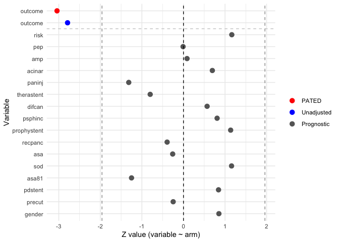

The goal of multipleOutcomes is to fit statistical models for multiple outcomes simultaneously. It computes estimates of parameters across fitted models and returns the matrix of asymptotic covariance. Various applications of this package, including PATED (Prognostic Variables Assisted Treatment Effect Detection), multiple comparison adjustment, conditional power are illustrated.
Installation
Install the development version from GitHub:
if(!requireNamespace("remotes", quietly = TRUE)) {
install.packages("remotes")
}
remotes::install_github(
"zhangh12/multipleOutcomes",
dependencies = TRUE
)Example
Let’s get started by analyzing a real randomized trial data. The data was from a randomized clinical trial of indomethacin to prevent post-ERCP pancreatitis. The binary endpoint is post-ERCP pancreatitis (yes/no). It was collected, reformatted and shared by Dr. Peter Higgins in his R package medicaldata. For more information, please refer to the data set indo_rct in medicaldata, and the manuscript.
Here we use the PATED method to estimate marginal treatment effect on post-ERCP pancreatitis, adjusting for a set of risk factors for PEP as potential prognostic covariates. I am not an expert of this disease, so I simply follow the description information of the covariates in medicaldata.
Here we compare PATED with unconditional logistic regression model in estimating the treatment effect. For each of the covariates, a regression model covar ~ rx is fitted to compute the slope coefficient . The correlation between and , the unadjusted estimate of treatment effect (outcome ~ rx), are computed in the column corr.
library(multipleOutcomes)
library(dplyr)
options(digits = 4)
data(indo)
# jointCovariance() and pated() need a per-row subject identifier in
# column `pid`. The trial data already has an integer `id` — we just
# stamp it as a string under the conventional name.
indo <- indo %>% mutate(pid = paste0("s-", id))
# When there's only one dataset, `data_index` defaults to 1 and the
# `list()` wrap is auto-applied, so neither needs to be spelled out.
fit <- pated(
glm_(outcome ~ rx, family = "binomial"),
glm_(risk ~ rx, family = "gaussian"),
glm_(gender ~ rx, family = "binomial"),
glm_(sod ~ rx, family = "binomial"),
glm_(pep ~ rx, family = "binomial"),
glm_(recpanc ~ rx, family = "binomial"),
glm_(psphinc ~ rx, family = "binomial"),
glm_(precut ~ rx, family = "binomial"),
glm_(difcan ~ rx, family = "binomial"),
glm_(amp ~ rx, family = "binomial"),
glm_(paninj ~ rx, family = "binomial"),
glm_(acinar ~ rx, family = "binomial"),
glm_(asa81 ~ rx, family = "binomial"),
glm_(asa ~ rx, family = "binomial"),
glm_(prophystent ~ rx, family = "binomial"),
glm_(therastent ~ rx, family = "binomial"),
glm_(pdstent ~ rx, family = "binomial"),
data = indo
)
plot(fit)
The plot above shows that all covariates are very well balanced between two arms (i.e. z-values of grey points are close to zero).
print(fit)
#> term family estimate stderr pvalue method corr
#> 1 outcome PATED -0.751357 0.24697 0.002348 PATED NA
#> 2 outcome glm -0.705130 0.25283 0.005287 Standard 1.000000
#> 3 risk glm 0.083338 0.07168 0.244984 Prognostic 0.139678
#> 4 pep glm -0.002142 0.22269 0.992326 Prognostic 0.126343
#> 5 amp glm 0.041102 0.47862 0.931565 Prognostic 0.082925
#> 6 acinar glm 0.275329 0.39618 0.487084 Prognostic 0.057366
#> 7 paninj glm -0.360946 0.27417 0.188011 Prognostic 0.053484
#> 8 therastent glm -0.252931 0.31591 0.423343 Prognostic -0.049425
#> 9 difcan glm 0.105662 0.18570 0.569368 Prognostic 0.048068
#> 10 psphinc glm 0.133453 0.16480 0.418059 Prognostic 0.037479
#> 11 prophystent glm 0.215272 0.18961 0.256226 Prognostic 0.034128
#> 12 recpanc glm -0.069990 0.17817 0.694454 Prognostic 0.033145
#> 13 asa glm -0.072330 0.27877 0.795278 Prognostic -0.024236
#> 14 sod glm 0.248237 0.21453 0.247228 Prognostic -0.010506
#> 15 asa81 glm -0.394693 0.31587 0.211467 Prognostic -0.007874
#> 16 pdstent glm 0.181177 0.21480 0.398967 Prognostic 0.006305
#> 17 precut glm -0.090072 0.36402 0.804570 Prognostic 0.005952
#> 18 gender glm 0.170977 0.20058 0.393994 Prognostic 0.004055It is evident that PATED produces a treatment effect estimate (-0.7514) that is close to the one from the unconditional logistic regression model (-0.7051), indicating a good property of unbiasness. Meanwhile, a slightly lower SE (0.247 v.s. 0.2528) and more significant p-value (0.0023 v.s. 0.0053) are obtained by PATED.
In comparison, we adjust the list of covariates in a logistic regression to estimate conditional log odds ratio of treatment. We have to exclude asa81 and asa due to missing data, and prophystent, therastent and pdstent due to numerical instability.
logit <- glm(
outcome ~ rx + risk + gender + sod + pep + recpanc + psphinc + precut + difcan + amp + paninj + acinar,
family = 'binomial', data = indo
) |> summary()
logit
#>
#> Call:
#> glm(formula = outcome ~ rx + risk + gender + sod + pep + recpanc +
#> psphinc + precut + difcan + amp + paninj + acinar, family = "binomial",
#> data = indo)
#>
#> Coefficients:
#> Estimate Std. Error z value Pr(>|z|)
#> (Intercept) -2.78401 0.47052 -5.92 3.3e-09 ***
#> rx -0.80110 0.26337 -3.04 0.0024 **
#> risk 0.15917 0.54108 0.29 0.7686
#> gender2_male -0.00483 0.35756 -0.01 0.9892
#> sod1_yes 0.33084 0.72780 0.45 0.6494
#> pep1_yes 0.98179 0.63710 1.54 0.1233
#> recpanc1_yes 0.01492 0.38860 0.04 0.9694
#> psphinc1_yes 0.11582 0.59986 0.19 0.8469
#> precut1_yes 0.20988 0.75567 0.28 0.7812
#> difcan1_yes 0.41110 0.61653 0.67 0.5049
#> amp1_yes 1.92303 0.85627 2.25 0.0247 *
#> paninj1_yes 0.16629 0.47729 0.35 0.7275
#> acinar1_yes 0.98954 0.61083 1.62 0.1052
#> ---
#> Signif. codes: 0 '***' 0.001 '**' 0.01 '*' 0.05 '.' 0.1 ' ' 1
#>
#> (Dispersion parameter for binomial family taken to be 1)
#>
#> Null deviance: 468.01 on 601 degrees of freedom
#> Residual deviance: 433.43 on 589 degrees of freedom
#> AIC: 459.4
#>
#> Number of Fisher Scoring iterations: 5The conditional treatment effect is estimated as -0.8011, with SE 0.2634 and p-value 0.0024.
In this example, it seems like using unconditional logistic regression or PATED can underestimate treatment effect compared to regression adjustment. However, this is not always the case in practice. We also see examples where the regression adjustment can underestimate the treatment effect substantially. In fact, such a comparison is invalid because they are estimating different parameters under different definitions of treatment effect. In terms of statistical power of detecting treatment effect, comprehensive simulation studies show that PATED always outperform unconditional logistic regression, and is comparable to (if not better than) regression adjustment.